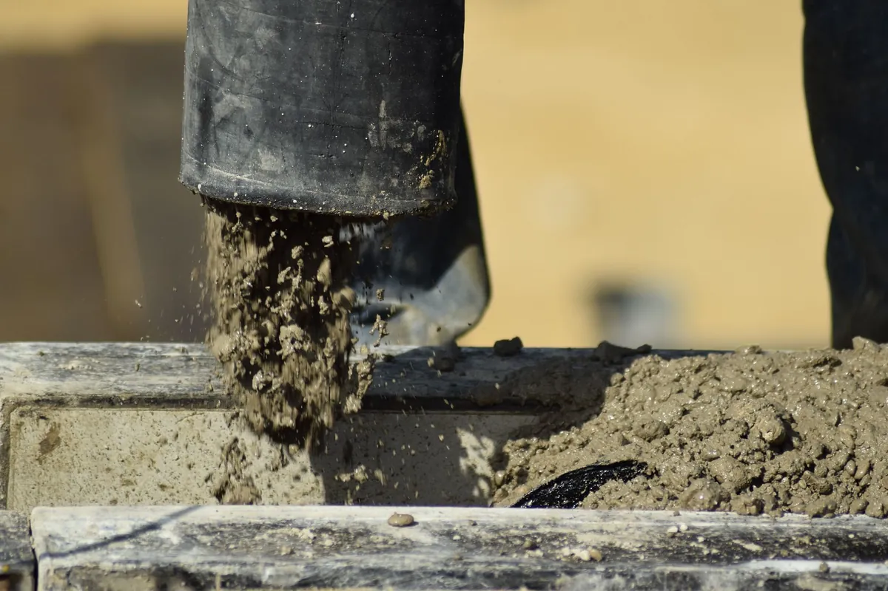

Vous voulez entreprendre des travaux qui touchent aux murs porteurs de votre appartement ? Vous vous demandez si c’est possible car vous vivez en copropriété ?
Premièrement, les murs porteurs de votre logement sont ceux qui sont responsables du maintien de la charpente et/ou de la structure des planchers de votre immeuble. On les appelle également des “murs maîtres”.
De nombreuses questions sont à se poser avant de vouloir faire ce type de travaux qui en plus d’être lourds, demandent l’accord de votre copropriété..
Dans cet article nous allons découvrir les précautions à prendre avant d’abattre ou créer une ouverture dans un mur porteur, en copropriété.
En complément, vous pouvez également consulter notre article La création d’une ouverture va-t-elle augmenter ma taxe foncière ?
La procédure
Pour effectuer des travaux sur un des murs porteurs de votre appartement, il vous faudra suivre la procédure suivante :
Contacter l’architecte de l’immeuble
Avant toutes choses, il faut que vous vous renseigniez auprès du syndic de copropriété afin de savoir s’il est possible de faire des travaux sur les murs porteurs de l’immeuble.
Celui-ci vous mettra en contact avec l'architecte chargé de la construction de l’immeuble. Idéalement, celui-ci devrait vous fournir les plans de votre habitation.
Si cela est possible, il est préférable que ce soit le même professionnel qui s’occupe de ces travaux. Mais si ce n’est pas le cas, vous devrez faire appel à un bureau d’étude structure.

Faire appel à un bureau d’études spécialisé
Pour les interventions sur la structure de l’immeuble, il faudra faire appel à un bureau d’études structure.
Un état des lieux contradictoire (EDLC) est obligatoire et doit être fait par le bureau d’étude lorsque le mur où vous voulez effectuer des travaux est mitoyen à d’autres logements ou si celui-ci est mitoyen à une partie commune de l’immeuble.
Grâce à ce constat, le bureau d’étude peut donner les plans et ainsi que les préconisations à prendre en compte pour réaliser ces travaux. Le plus souvent, celui-ci préconise l’installation de poutres métalliques (IPN), qui reprennent les charges supportées par le mur porteur.
Avant les travaux, un huissier peut se charger de la rédaction du constat afin que celui-ci ait une valeur juridique et ne puisse pas être remis en cause.
L’EDLC permet également au copropriétaire de se protéger en cas de trouble de voisinage pendant et après les travaux.
Trouver une entreprise
Le choix de l’entreprise est très important dans ce type de travaux.
Outre la démolition du mur porteur, l’entreprise doit prendre en compte le transfert de charges pendant les travaux. Autrement dit, elle devra mettre en place des supports temporaires, pour soutenir le plancher et/ou la charpente pendant la démolition du mur.
Pour cela, nous vous conseillons de faire appel à une entreprise de maçonnerie spécialisée. Celle-ci doit, bien évidemment, posséder une assurance décennale, afin de ne pas avoir de problème suite aux travaux.
L’accord de la copropriété
Cela semble contre-intuitif, mais les murs porteurs de votre appartement ne vous appartiennent pas. Ils sont en effet considérés comme des parties communes.
Afin de pouvoir effectuer ce type de travaux lourds, amenant à changer la structure de l’immeuble, vous devez donc demander l’accord du syndic de copropriété.
En effet, une assemblée générale va être demandée afin que vous disposiez de l’aval de tous vos copropriétaires.
À cette assemblée, vous devrez avoir les documents suivants :
- Les documents de l’architecte
- Les plans d’éxécution du bureau d’étude
- L'attestation décennale de l’entreprise en charge des travaux
- Une copie du devis de l’entreprise pour effectuer les travaux
Suite à cela, vous pourrez savoir si oui ou non vous pouvez toucher aux murs porteurs pour la réalisation de vos travaux.
Trouver une entreprise qualifiée
Comme nous avons pu le voir, réaliser des travaux sur un mur porteur est une opération de grande envergure.
En effet, les murs porteurs étant primordiaux à la structure de l’immeuble, la réalisation de travaux sur ceux-ci demande un savoir-faire important.
L’entreprise choisie est dans l’obligation d’avoir une assurance décennale car des dommages peuvent apparaître longtemps après les travaux.
C’est pour cela que Plateo est né.
Plateo vous permet de trouver une entreprise BTP de confiance pour tous vos travaux. La plateforme se charge de vous trouver un professionnel répondant à tous vos critères.
Si vous habitez à Marseille, Aix en Provence ou aux alentours et en région PACA, faites appel à Plateo pour vos travaux.
Il vous suffit d’aller sur www.plateo.fr et de faire votre demande de devis en ligne gratuitement et sans engagement. Ensuite vous recevrez des devis de nos partenaires afin de faire votre choix.